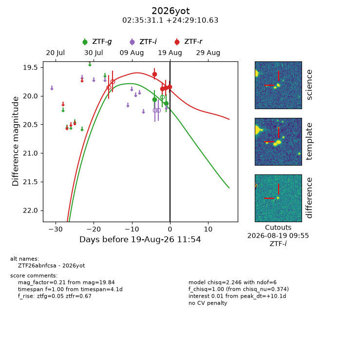
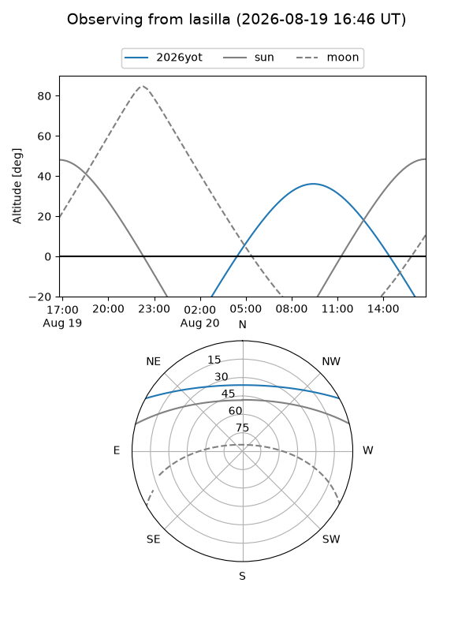
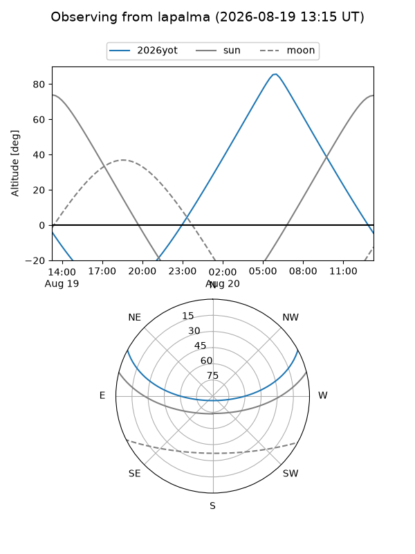
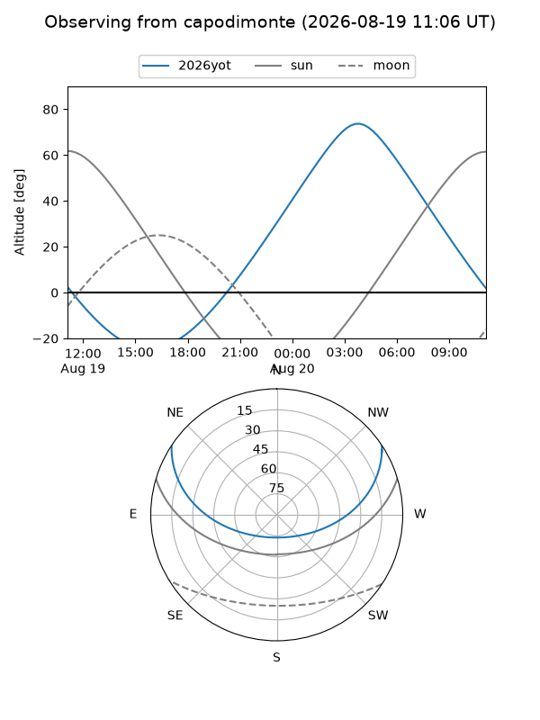
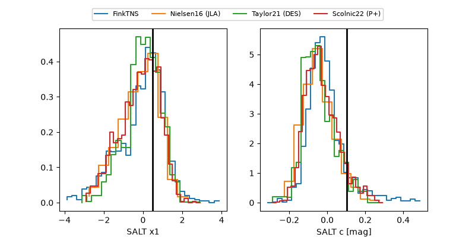

2026yot
Target 2026yot at 2026-08-19 11:57
Aliases and brokers:
FINK-ZTF: ztf.fink-portal.org/ZTF26abnfcsa
Lasair-ZTF: lasair-ztf.lsst.ac.uk/objects/ZTF26abnfcsa
ALeRCE-ZTF: alerce.online/object/ZTF26abnfcsa
YSE-PZ: ziggy.ucolick.org/yse/transient_detail/2026yot
TNS name: wis-tns.org/object/2026yot
Direct TNS query: direct search
alt names
ZTF26abnfcsa (ztf,fink_ztf)
2026yot (tns,yse)
Coordinates:
equatorial (ra, dec) = 38.8797,+24.48629
equatorial (HMS+DMS) = 02:35:31.12,+24:29:10.63
galactic (l, b) = (151.2212,-32.60557)
Flags:
TNS type: nan
peak dt: +10.1
Photometry:
last ztfg=20.13, ztfr=19.84
2 ztfg, 4 ztfr detections
Lightcurve

Visibility



Additional plots
